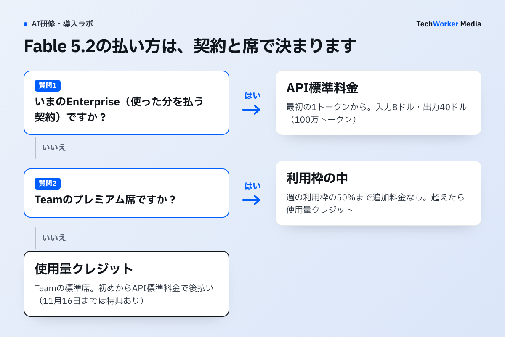
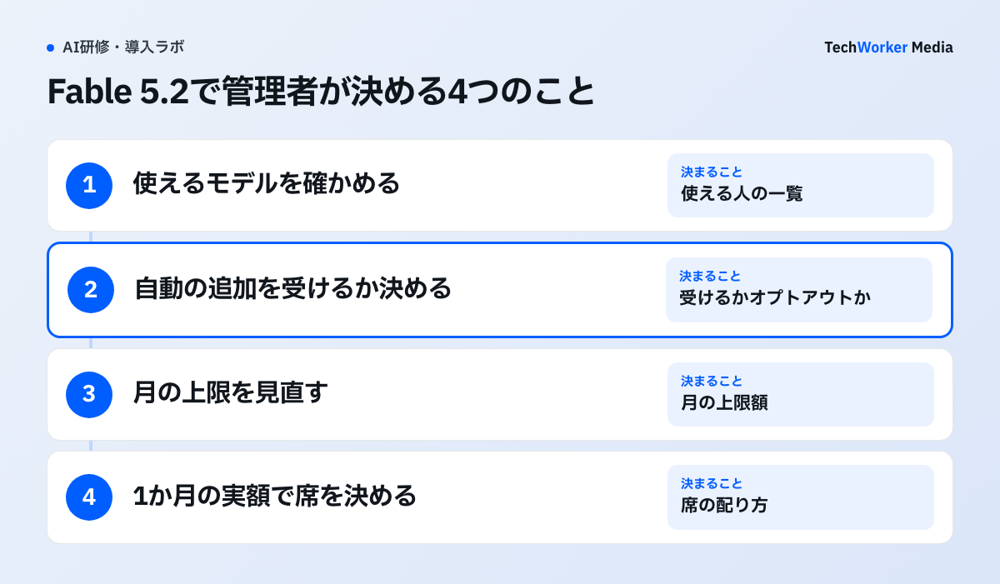

Claude Fable 5.2は、Anthropicが2026年11月9日に出した上位モデルです。会社で使うときの扱いは、契約と席の種類で3つに分かれます。
- Teamのプレミアム席（1人月100ドル・年払い）：週の利用枠の50%まで、追加料金なしで使えます。
- Teamの標準席（1人月20ドル・年払い）：プランの利用枠には含まれません。使用量クレジットで、API標準料金を後から払います。11月16日（米国太平洋時間）までは特典で枠に含まれます。
- いまのEnterpriseとAPI：最初の1トークンからAPI標準料金です。100万トークン当たり入力8ドル、出力40ドルで、前のFable 5.1より2割安くなりました。
Enterpriseでは、管理者が有効にするまでFable 5.2はオフです。発表から7日後には、Fableを有効にしているロールへ自動で加わります。この記事ではAnthropicの発表、料金ページ、ヘルプセンターを2026年11月12日に確認し、料金、席ごとの扱い、管理者の期限、費用の比べ方、データの保存、稟議で聞かれることをまとめます。
Claude Fable 5.2とは何で、何が変わりましたか？
Fable 5.2はFable 5.1の後継で、出力が最大30%速くなり、API料金が下がりました。
原文“They generate outputs up to 30% faster than Claude Fable 5.1 and Claude Mythos 5.1, and they’re available at a lower price: $8 per million input tokens and $40 per million output tokens.”
日本語訳この2つのモデルはClaude Fable 5.1とClaude Mythos 5.1より最大30%速く出力し、より安い価格で提供されます。100万入力トークン当たり8ドル、100万出力トークン当たり40ドルです。
引用の「この2つ」はFable 5.2とMythos 5.2です。発表によると、2つは同じモデルです。Fableはサイバーと生物学の分野で強い安全対策を加え、すべての利用者に出しています。Mythosは、サイバーなどの検証プログラムに申し込んだ組織向けです。会社で普通に契約して使うのはFableです。
この引用で分かるのはAPIの単価までです。TeamやEnterpriseの席でどう数えるかは、ヘルプセンターの「Claude Fable models on your plan」に書かれています。次の節から、その記事と料金ページをもとに整理します。
Fable 5.2の料金はいくらですか？
APIは100万トークン当たり入力8ドル、出力40ドルです。席の中で使う分も、利用枠を超えたあとはこの単価で払います。
| モデル | 入力 | 出力 | キャッシュの読み出し | Batch API（入力／出力） |
|---|---|---|---|---|
| Claude Fable 5.2 | 8ドル | 40ドル | 0.20ドル | 4ドル／20ドル |
| Claude Fable 5.1 | 10ドル | 50ドル | 0.25ドル | — |
| Claude Opus 5.5 | 4ドル | 20ドル | 0.20ドル | — |
| Claude Sonnet 5.5 | 2ドル | 10ドル | 0.10ドル | — |
単位は100万トークン当たりの米ドル。出典：Claude Platform「Pricing」（2026年11月12日確認）。「—」は今回この記事で比べていない項目です。
Fable 5.2はOpus 5.5の2倍の単価です。同じトークン数ならOpus 5.5の2倍の額になるので、全員の既定のモデルにすると費用が大きく変わります。
料金ページには、単価に掛かる条件も載っています。
- fast mode：出力を最大2.5倍速くする設定で、入力16ドル、出力80ドルです。Batch APIとは一緒に使えません。
- 米国内だけで処理する設定：APIで処理の場所を米国に限ると、すべての単価が1.1倍になります。Enterpriseでこの設定をオンにした組織も同じです。
- キャッシュ：同じ前置きをくり返し送るときは、読み出しが入力単価の0.025倍になります。
席の料金は変わっていません。Teamは標準席が1人月20ドル、プレミアム席が月100ドルです（年払い。月払いは25ドルと125ドル）。いまのEnterpriseは1席月20ドル（年払い、最低20席）に、使った分のAPI料金が加わります。
4社の料金比較表と稟議書の雛形は、下の枠から受け取れます。
Team・Enterpriseでは、Fable 5.2をどう使えますか？
プレミアム席は利用枠の中で、標準席は使用量クレジットで、いまのEnterpriseはAPI料金で使います。

原文“On Pro plans, standard seats on Team plans, and standard seats on legacy seat-based Enterprise plans, all three models run on pay-as-you-go usage credits.”
日本語訳Proプラン、Teamプランの標準席、旧来の席ベースのEnterpriseプランの標準席では、3つのモデルすべてが使った分だけ払う使用量クレジットで動きます。
「3つのモデル」はFable 5.2、5.1、5です。同じ記事に、席の種類ごとの扱いが並んでいます。表にすると次のとおりです。
| 契約・席 | Fable 5.2の扱い | 利用枠を使い切ったあと |
|---|---|---|
| Teamのプレミアム席 | プランに含まれる。週の利用枠の50%まで追加料金なし | 使用量クレジットで続けるか、別のモデルに切り替える |
| Teamの標準席 | プランの利用枠に含まれない。初めから使用量クレジット | —（初めからAPI標準料金） |
| いまのEnterprise（使った分を払う契約） | 最初の1トークンからAPI標準料金 | —（利用枠がない） |
| 旧来の席ベースのEnterprise（プレミアム席） | プランに含まれる。週の利用枠の50%まで追加料金なし | 使用量クレジットで続けるか、別のモデルに切り替える |
| 旧来の席ベースのEnterprise（標準席） | プランに含まれない。組織が使用量クレジットを有効にしたときだけ使える | —（初めから使用量クレジット） |
出典：Claude Help Center「Claude Fable models on your plan」「How am I billed for my Enterprise plan?」（2026年11月12日確認）。
「50%」は利用枠が1.5倍になる意味ではありません。週の利用枠のうち、半分までをFableに使えるという意味です。ほかのモデルも同じ枠から減るので、合計で週の枠を超えることはありません。Fableはほかのモデルより早く枠を減らす、とも書かれています。
使用量クレジットは、利用枠を超えた分をAPI標準料金で払う仕組みです。Teamではオーナーが前払いで買い、組織全体の月の上限を決められます。利用者ごとの上限は、組織によって使えない場合があります。
11月16日までに管理者は何を決めますか？
決めることは2つです。Enterpriseでは自動で有効になるのを受けるか止めるか、Teamでは特典の週のあとに標準席のFableをどう扱うかです。

Enterpriseの管理者：Fable 5.2は管理者が有効にするまでオフです。ただし発表から7日後に、Fableのモデルを1つでも有効にしているロールへ自動で加わります。既定のモデルをFableにしているロールは、既定がFable 5.2に変わります。避けたいときは、それより前に管理者がオプトアウトします。いまのEnterpriseはすべてAPI料金なので、既定のモデルが変わると、そのまま請求額に響きます。
Teamのオーナー：標準席には、発表の特典として1週間だけFableが利用枠に含まれます。期間は2026年11月9日から11月16日23時59分（米国太平洋時間）までです。日本時間では11月17日16時59分です。標準席には、この週だけ使えるリセットも1回付きます。対象は、2026年11月9日10時（米国太平洋時間）より前に組織の有料の請求が始まり、その時点で組織に入っていた人です。特典が終わると、標準席のFableは使用量クレジットに戻ります。
特典の週に標準席で試した人が、そのあともFableを選び続けると、利用額が増えます。使用量クレジットを有効にしている組織では、11月16日までに組織全体の月の上限を見直します。標準席でFableを使わせない方針なら、使えるモデルの設定を確かめます。Team・Enterpriseでは、使えるモデルを組織のオーナーが決めます。
プレミアム席には、Fableの利用枠を1回戻す「リセット」が1〜3回付きます。回数は組織が最初に支払った日からの長さで決まり、6か月未満は1回、6〜12か月は2回、12か月を超えると3回です。プレミアム席のリセットの期限は2027年3月8日23時59分（米国太平洋時間）です。
標準席とプレミアム席、どちらが安く済みますか？
Fableに使う額が1人月80ドルを超えるかどうかが目安です。超えない人は、標準席のまま使用量クレジットで払うほうが安く済みます。
プレミアム席と標準席の差は、年払いで1人月80ドルです（100ドル－20ドル）。標準席の人がFable 5.2に使う額が月80ドルより少なければ、席を上げずにクレジットで払うほうが安くなります。
次は、Fable 5.2のAPI単価で計算した例です。月に使うトークン数は、説明のために置いた仮定です。キャッシュの割引は入れていません。
| 1人が1か月にFableで使う量（仮定） | Fable 5.2の額 | Fable 5.1だった場合 | 席を上げる差額（80ドル）と比べて |
|---|---|---|---|
| 入力300万・出力30万トークン | 36ドル（24＋12） | 45ドル | 標準席のままが安い |
| 入力1,000万・出力100万トークン | 120ドル（80＋40） | 150ドル | プレミアム席を検討する |
50人の会社で考えます。全員を標準席にすると、席の料金は月1,000ドルです（20ドル×50人）。Fableを多く使う10人だけをプレミアム席にすると、月1,800ドルです（100ドル×10人＋20ドル×40人）。差額の800ドルより、10人のクレジットの額が大きいかどうかで決めます。
ただし、プレミアム席でFableに使える量は「週の利用枠の50%まで」です。この枠が何トークンに当たるかは公開されていません。そのため、計算だけで決めず、特典の週と最初の1か月で実際の利用額を測ります。Teamでは、オーナーが組織の設定のUsageで、メンバーごとの支出を見られます。
Claude Code全体の利用額の見方と、TechWorkerが実際に使った額はClaudeの法人契約と料金に載せています。トークンの単価から作業1件の費用を出す方法は生成AIのトークンコストで説明しています。
社内の情報を入れると、どのくらい保存されますか？
発表では、ZDR（データを保存しない契約）の対象でない顧客は、安全性の監視のため30日間保存されると書かれています。
Fable 5.2とMythos 5.2は、一定期間の使われ方をまとめて見て、悪用を見つける仕組みを使います。発表は、そのために30日間保存すると説明しています。ZDRの対象の顧客は、Enterprise Frontier Safeguardsを入れる前でも、ZDRのまま使い続けられます。
大企業向けには「Enterprise Frontier Safeguards」も発表されました。安全性の監視を、顧客側の基盤に保存したデータで行う仕組みです。いまは一部の顧客だけの試験提供で、Enterpriseの顧客は担当窓口か申込みフォームから申し込めます。
モデルの学習については、Teamの料金ページに「既定で、会社の内容をモデルの学習に使わない」と書かれています。保存期間と学習への利用は別の話なので、稟議では分けて書きます。発表には、30日の保存がどの契約・どの使い方に当たるかまでは書かれていません。保存期間を社内規程で決めている会社は、担当窓口に確かめてから広げます。
稟議では何を聞かれますか？
聞かれるのは、誰に使わせるか、月にいくらまでか、データがどれだけ残るか、既定のモデルをどうするかの4つです。
- 誰に使わせますか。Fable 5.2はOpus 5.5の2倍の単価です。難しい設計や長い調べ物など、使う場面を決めた人だけに配ります。
- 月にいくらまでですか。Teamは使用量クレジットの組織全体の月の上限を、Enterpriseは組織と利用者ごとの上限を書きます。上限に届くと利用が止まることも書きます。
- データはどれだけ残りますか。ZDRの対象でなければ、安全性の監視のため30日間保存されます。学習に使わないことと分けて書きます。
- 既定のモデルはどうしますか。全員の既定をFable 5.2にはしません。Enterpriseは発表7日後の自動の追加を受けるかどうかを、先に決めます。
稟議に入れる項目
□ 使う人と場面（部署・人数・使う作業）
□ 席の種類（標準席かプレミアム席か、その理由）
□ 月の上限（組織全体と利用者ごと。ドル建ては換算レートと日付）
□ データの扱い（30日の保存、学習への利用、ZDRの有無）
□ 既定のモデルと、使えるモデルの設定
□ 見直しの条件（1か月の実額が上限に近いとき、席を上げるか絞るか）
よくある失敗にはどんなものがありますか？
多いのは、特典の週の感覚で使い続けること、既定のモデルが知らないうちに変わること、席の50%を利用枠の追加と読むことの3つです。
- 特典の週と同じ感覚で、標準席でFableを使い続ける。11月16日を過ぎると、標準席のFableは使用量クレジットになります。上限を決めていないと、月末の請求で気づきます。
- Enterpriseで、既定のモデルが知らないうちにFable 5.2に変わる。既定をFableにしているロールは、発表7日後に既定がFable 5.2になります。費用の見込みが変わるので、オプトアウトするかを先に決めます。
- プレミアム席の「50%」を、枠が増えると読む。週の利用枠の半分までをFableに使えるという意味です。Fableを多く使うと、ほかのモデルに使える分が減ります。
- Claude Codeの版が古く、Fable 5.2が出てこない。Fable 5.2には2.1.321以降が要ります。研修や試用の前に、全員の版をそろえます。
- 単価だけを見て、Fable 5.1と同じ予算を組む。単価は2割下がりましたが、席の扱いは変わっていません。使う人と量を決めないと、総額は下がりません。
よくある質問
プレミアム席は、週の利用枠の50%まで追加料金なしで使えます。標準席はプランの利用枠に含まれず、使用量クレジット（API標準料金での後払い）で使います。ただし2026年11月16日23時59分（米国太平洋時間）までは、発表の特典で標準席も週の利用枠の50%まで含まれます。
100万トークン当たり入力8ドル、出力40ドルです。前のFable 5.1は入力10ドル、出力50ドルでした。速く出力するfast modeは入力16ドル、出力80ドルです。Batch APIを使うと入力4ドル、出力20ドルです（2026年11月12日確認）。
使えません。Enterpriseでは、管理者が有効にするまでFable 5.2はオフです。ただし発表から7日後に、Fableのモデルを1つでも有効にしているロールへ自動で加わります。既定のモデルをFableにしているロールは、既定がFable 5.2に変わります。避けたい場合は、その前に管理者がオプトアウトします。
発表によると、ZDR（データを保存しない契約）の対象でない顧客は、安全性の監視のため30日間保存されます。ZDRの対象の顧客は、Enterprise Frontier Safeguardsを入れる前でも、ZDRのまま使い続けられます。自社の契約がどちらに当たるかは、Anthropicの担当窓口に確かめます。
Claude Codeのバージョン2.1.321以降が必要です。Team・Enterpriseでは、組織のオーナーや管理者がFable 5.2を使えるモデルにしていることも条件です。
次の一歩は何から始めればよいですか？
11月16日までに、使えるモデルの設定と、使用量クレジットの月の上限を確かめます。
- 組織の設定で、Fable 5.2を使えるロールと既定のモデルを確かめます（Enterpriseは自動の追加を受けるかを決めます）。
- Teamは、使用量クレジットの組織全体の月の上限を見直します。
- 特典の週と最初の1か月の利用額を利用者ごとに見て、プレミアム席に上げる人を決めます。
席の配分から稟議資料の組み立て、利用ルールの整備、研修まではTechWorkerが伴走します。検討段階のご相談だけでも歓迎です。
出典と確認範囲
確認日：2026年11月12日。料金、プランの条件、特典の期間は変更されるため、申込みの時点で公式情報を確認してください。金額は米ドルで、税を含みません。次の点は公式情報で確認できなかったため、記載していません。プレミアム席の「週の利用枠」が何トークンに当たるか、30日の保存が当てはまる契約と使い方の細かい範囲、Enterprise Frontier Safeguardsの料金です。TechWorkerの環境でFable 5.2の利用額は、まだ測っていません。
- Anthropic「Claude Fable 5.2 and Mythos 5.2」（2026年11月9日）
- Claude Platform「Pricing」（API単価、fast mode、Batch API、米国内処理の倍率）
- Claude「Pricing」（Team・Enterpriseの席の料金）
- Claude Help Center「Claude Fable models on your plan」
- Claude Help Center「Claude Fable 5.2 launch offers」
- Claude Help Center「Manage usage credits for Team and seat-based Enterprise plans」
- Claude Help Center「How am I billed for my Enterprise plan?」